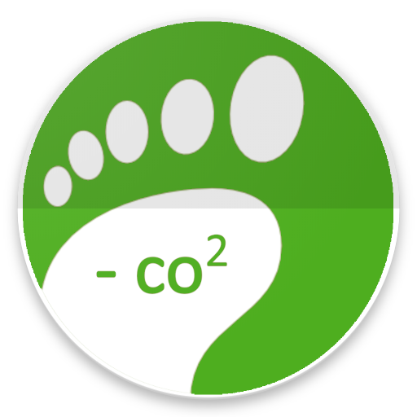

<!--
  Generated template for the LoginPage page.

  See http://ionicframework.com/docs/components/#navigation for more info on
  Ionic pages and navigation.
-->
<ion-header class="bar">

  <ion-navbar color="primary" >
    <ion-title>Iniciar Sesión</ion-title>
  </ion-navbar>

</ion-header>

<ion-content class="bg-style" scroll="false" padding>
  <div>
    <div class="item item-image" style="border:none;margin-top:50px;">
        
    </div>

    <button ion-button full icon-left color="dark" (click)="login()">
      <ion-icon name="logo-facebook"></ion-icon>
      connect with Facebook
    </button>
    <button ion-button full clear style="color: white;" (click)="bypass()">
      No tienes Facebook?
    </button>
  </div>
</ion-content>

